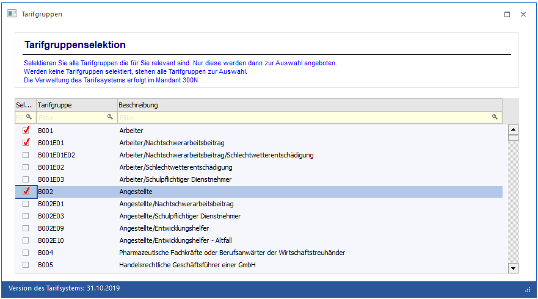
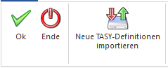
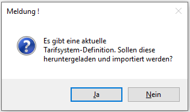
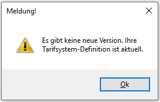

Über den Menüpunkt
1 Stammdaten
1 Tarifsystem/Bemessungen
1 Tarifgruppenselektion
werden die TASY (Tarifsystem)- Definitionen verwaltet und es kann eine Selektion getroffen werden, welche Tarifgruppen (samt Ergänzungen) bei der Verwaltung von Beschäftigungen im Arbeitnehmerstamm, zur Verfügung stehen sollen.

Im Informationstext ist ersichtlich, in welchem Mandanten die Verwaltung des Tarifsystems erfolgt, da dies auch in einem "allgemeinen" Mandanten erfolgen kann. Die Einstellung wo die Verwaltung durchgeführt wird, wird unter
1 WinLine START
1 Parameter
1 Applikationsparameter
hinterlegt.
Ø Selektion
Wird eine Checkbox der Spalte Selektion aktiviert, dann steht diese Tarifgruppe im Arbeitnehmerstamm bei den Beschäftigungen zur Auswahl zur Verfügung. Wird keine einzige Checkbox aktiviert, dann stehen generell alle Tarifgruppen im Arbeitnehmerstamm zur Verfügung
Ø Tarifgruppe
Hier wird der Tarifgruppencode angezeigt
Ø Beschreibung
Hier wird der Beschreibungstext zur Tarifgruppe angezeigt
Ø Version des Tarifsystems
In der Statusleiste ist ersichtlich, welche Version des Tarifsystems aktuell geladen wurde. Es ist darauf zu achten, dass das Tarifsystem stets aktuell gehalten wird, da auch während des Jahres aktualisierte Tarifsysteme von der Krankenkasse zur Verfügung gestellt werden können.
Buttons

Ø Ok
Mittels OK Button wird die Tarifgruppenselektion gespeichert
Ø Ende
Mittels Ende Button wird die Tarifgruppenselektion geschlossen
Ø Neue TASY-Definitionen importieren
Bei aufrechter Internetverbindung kann am Mesonic Server die aktuellste TASY Definition abgeholt werden. Wird der Button angewählt, so wird überprüft, ob eine aktuellere Version als die Vorhandene zur Verfügung steht. Ist dies der Fall, so wird folgende Meldung angezeigt:

Wird diese mit "Ja" bestätigt, wird die TASY-Definition aktualisiert.
Ist die vorhandene TASY-Definition aktuell, dann wird folgende Meldung angezeigt:
